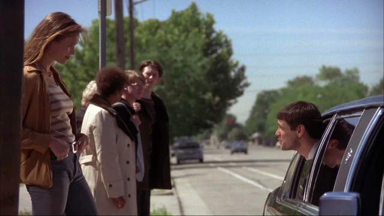
Excuse me. Could you tell me how to get to the medical school?
You go straight ahead, and you make a left over the bridge.
That's a lovely accent you have. New Jersey?
Austria.
Austria! Ha ha! Well, then... G'day, mate. Let's put another shrimp on the barbie.
Let's not.
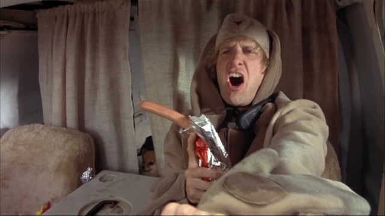
Now, who's got the wiener schnitzel?
Beautiful. There you go, Dolf. There you go, buddy. Yeah.
Let's see. Next, we got roast beef au jus.
Who's got the roast beef au jus?
Stella, beautiful. Bon appetit, Stella. Oui oui, yeah. Walk away. Go on. Go on.
Last but not least foot-long! Who's got the foot-long?
There you... Very funny, rascal. Very funny. In your dreams.
Harry, why haven't you dropped those dogs off at the show yet?
Uh, sir, I didn't want to send them to a performance on an empty stomach, sir.
Get a move on it!
Yes, sir.
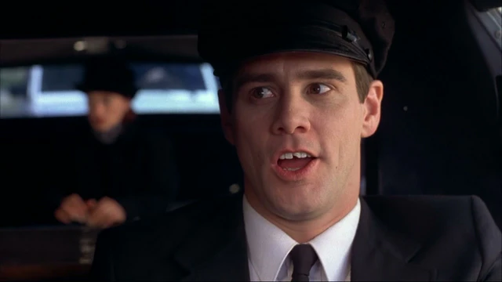
Whew. Suck me sideways.
Hello. How are you? I'll be out in one minute.
Why are you going to the airport? Flying somewhere?
How'd you guess?
I saw your luggage. Then when I noticed the airline ticket, I put two and two together.
So where're you headed?
Aspen.
Mmm... California. Beautiful.
Name's Christmas, Lloyd Christmas.
I'm Mary Swanson.
This isn't my real job, you know.
No?
Nope, my friend Harry and I are saving up our money to open our own pet store.
That's nice.
I got worms.
I beg your pardon?
That's what we're going to call it - «I Got Worms».
We're going to specialize in selling worm farms, you know, like ant farms.
What's the matter?
A little tense about the flight?
Something like that.
There's really nothing to worry about, Mary.
Statistically, they say you're more likely to get killed on the way to the airport, you know, like in a head-on crash or flying off a cliff or getting trapped under a gas truck.
That's the worst. I have this cousin... Well, I had this cousin...
Lloyd, could you keep your eyes on the road, please?
Oh. Yeah. Good thinking.
Can't be too careful. A lot of bad drivers out there.
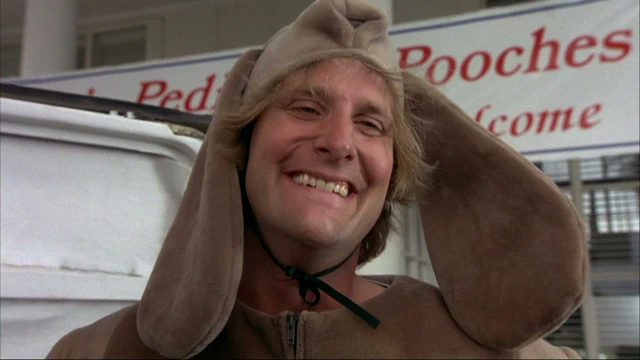
Hey, watch it!
Okay, gang, you know the rules - no humping, no pushing, no sniffing heinies.
Where have you been? My dogs were supposed to be here 40 minutes ago!
Now I hardly have any time to primp them.
Don't worry about a thing, Mrs. Neugy-burger.
Neugeboren!
These pooches aren't going to need any primping.
You know why? I'll tell you why.
Because I bathed them and I clipped them myself.
And I stand by my performance.
You know, on second thought, you might just want to run a comb through 'em.
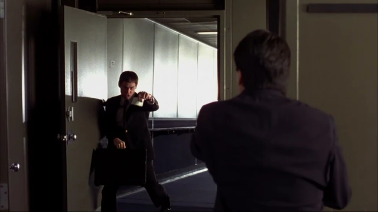
Thanks. Here you go.
Oh no, Mary. I couldn't possibly accept that, not after all we've been through.
Thank you, Lloyd. Uh, good luck with your worms.
Hey. How about a hug?
Oh. I hate goodbyes.
Uh, Lloyd...
Shh! Just go.
She's gonna leave the briefcase near the escalator.
You make the pickup.
Piece of cake.
Good bye, my love!
There 's our payday. She left it. Let's go.
Excuse me! Coming through! Move it or lose it, sister!
Eenie... Meenie... Minie... Mo!
Hold that plane!
Sir, you can't go in there!
It's okay! I'm a limo driver!
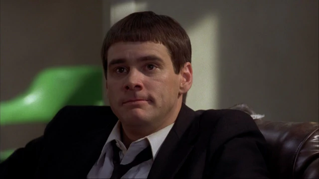
Hi, Lloyd.
Hi, Harry.
How was your day?
Not bad. Fell off the jetway again.
Who the hell you figure this guy's working for, anyway?
I don't know. We sure as hell better find out.
The ulcer?
I'll live.
So you got fired again, huh?
Oh, yeah. They always freak out when you leave the scene of an accident, you know?
Yeah, well, I lost my job too.
Man! You are one pathetic loser. No offense.
No. None taken.
You know what really chaffs my ass, though?
I spent my life's savings turning my van into a dog.
Hi, Petey!
The alarm alone cost me 200.
Hey! Chicks love it. It's a shaggin' wagon.
What's with the briefcase?
It's a love memento. The most beautiful woman alive.
I drove her to the airport. Sparks flew, emotions ran high.
She actually talked to me, man.
Get outta here!
Oh, yeah yeah. Tractor beam sucked me right in.
Anyway...
She left this in the terminal and flew to Aspen and out of my life.
What's in it?
Man, I would have to be a lowlife to go rootin' around in somebody else's private property.
Is it locked?
Yeah, really well.
There's two of them. One of them's got a gun.
Did you pay the gas bill?
Do you realize what you've done?
I'm sorry. I say we bail.
Okay.
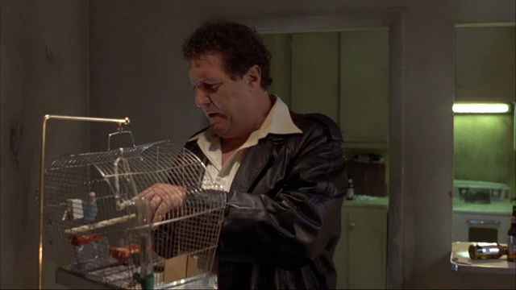
Briefcase ain't here.
They must have taken it with them.
Well, he's got to come home sometime.
Maybe we should trash the place, send him a little message.
I don't think he's going to get that message, Joe.
I mean, the guy's got worms in his living room.
Well. Oh, I got a better idea.
I thought I taw a puddy cat. I did. I did.
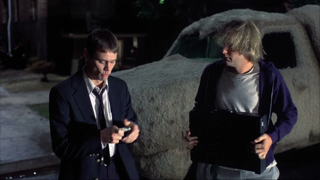
I can't believe. We drove around all day and there's not a single job in this town. There is nothing, nada, zip!
Yeah, unless you want to work 40 hours a week.
Here. I'm going to go to the store.
Okay, just get the bare essentials. This is the last of our dough.
Hey. What do l look like?
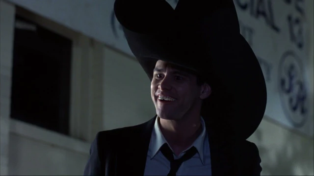
Cripes!
Excuse me, little old lady.
Uh, do you have change for a dollar?
Change? No, I'm sorry. I don't.
Oh... well, uh, could you do me a favor and watch my stuff here while I go break a dollar?
Of course.
Thanks. Hey. I guess they're right.
Senior citizens, although slow and dangerous behind the wheel, can still serve a purpose.
I'll be right back. Don't you go dying on me!
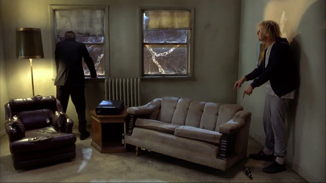
Where's the booze?
I got robbed by a sweet old lady on a motorized cart.
I didn't even see it coming.
No...
Harry. Come on, Harry. Cheer up.
It gets worse, Lloyd. My parakeet Petey... He's dead.
Oh, man. I'm sorry, Harry. What happened?
His head fell off.
His head fell off?
Yeah, he was pretty old.
That's it. I've had it with this dump!
We got no food. We got no jobs.
Our pets' heads are falling off!
Okay, just calm down!
What the hell are we doing here, Harry?
We gotta get out of this town!
Yeah? And go where? Where are we gonna go?
I'll tell you where, someplace warm...
A place where the beer flows like wine, where beautiful women instinctively flock like the salmon of Capistrano.
I'm talking about a little place called... Aspen.
I don't know, Lloyd. The French are assholes.
Wait a minute! I know what you're up to, mister.
Yeah! You just wanna go to Aspen and find that girl who lost her briefcase, and you need me to drive you there!
Right? Am I right? Am I right?
Yeah! So? So I wanna go someplace where we know somebody who can plug us into the social pipeline.
No, Lloyd! No! I say we stay here, we hunt for jobs, and we keep saving our money for the worm store!
I don't know about you, but I am getting sick and tired of running from creditors!
You know what I'm sick and tired of, Harry?
I'm sick and tired of having to eke my way through life.
I'm sick and tired of being a nobody.
But most of all... I'm sick and tired of having nobody.
Okay, Lloyd. Aspen it is.
You'd better not be foolin'.
Okay okay, just let it out.
Have a good cry.
Come on. Okay. Okay, that's enough.
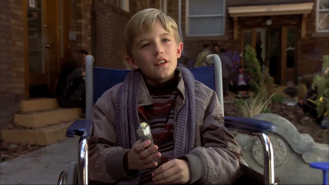
Lloyd, what are you doing?
It feels like you're running at an incredible rate, Harry.
Would you quit it?
We're not even through Connecticut yet, and already you're annoying me.
We're really doing it, aren't we?
Yeah.
Hey, where'd you get those?
I bought them when we filled up.
Well we're supposed to talk about all expenditures, Lloyd.
We're on a very tight budget.
This didn't come out of our travel fund.
I was able to raise 25 extra bucks before we left.
Where did you get 25 extra bucks?
I sold some stuff to Billy in 4C.
The blind kid?
Yeah!
What did you sell him, Lloyd?
Stuff.
What kind of stuff?
I don't know. A few baseball cards, a sack of marbles... Petey.
Petey? You sold my dead bird to a blind kid?
Lloyd, that... That... What are you... Petey didn't even have a head!
Harry, I took care of it.
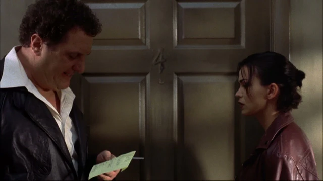
Pretty bird. Yeah. Can you say, "pretty bird"?
Pretty bird. Yes, pretty bird. Pretty bird.
Polly want a cracker?
Those rat bastards. They're rubbing it right in our faces.
Man, Andre'll have a goddamn hemorrhage if we don't get that briefcase back.
They must have been following us for weeks.
Why you say?
"Gas Man." How the hell do they know that I got gas?
They gotta be pros.
Don't worry. We're going to get that money back.
And I'll tell you something else, they ain't never getting to Aspen.
I'm going to see to that.
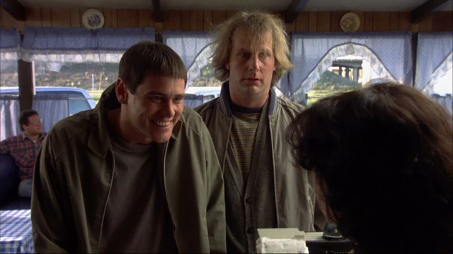
They got The Monkees. They were a major influence on The Beatles.
Yeah, I know.
Excuse me, Flo? Flo, like the TV show.
Uh... what is the "soup du jour"?
It's the soup of the day.
That sounds good. I'll have that.
Anything else before I leave the area?
Yes yes, my soda's flat. It doesn't have any bubbles.
Happy now?
Feels good to mingle with these laid-back country folk, don't it, Harr? I like it a lot.
Uh-oh.
What? What's the matter?
You spilled the salt, that's what's the matter.
Spilling the salt is very bad luck.
We're driving across the country.
The last thing we need is bad luck.
Quick. Toss some salt over your right shoulder.
Uh-oh, too little too late, Harry.
Who's the dead man that hit me with the salt shaker?
Well... uh... it was a terrible mistake, sir.
Please, believe me. I would never do anything to offend a man of your size.
Kick his ass, Sea Bass!
You gonna eat that?
What? That? No, yes, no. Well... no, it crossed my mind. Yeah.
Still want it?
Nah, you go ahead.
You really wimped out, man.
What are you talking about, wimped out?
Well-well, did you... The guy hawked on my burger!
Hey, wait a second. I think I just...
Yeah... I just had an idea.
Excuse me. Guys?
What the hell do you want?
Uh... I just want to apologize for that unpleasant scene a little earlier.
My friend Harry and l would like to buy you guys a round of beers. Just to bury the hatchet.
Make it four boilermakers.
Whatever you want, sir.
I'll have the waitress bring it over immediately.
Lloyd, what are you doing?
We can't afford to buy them drinks.
Excuse me. Sea Bass and the fellas offered to pick up our check.
They said just put it on their tab. They're very nice.
Sea Bass said that?
Well, if that guy at the table over there is Sea Bass.
Ah! Uh. All right, if that's what he wants.
Put these on there too, okay?
I'm gonna kill those sons of bitches!
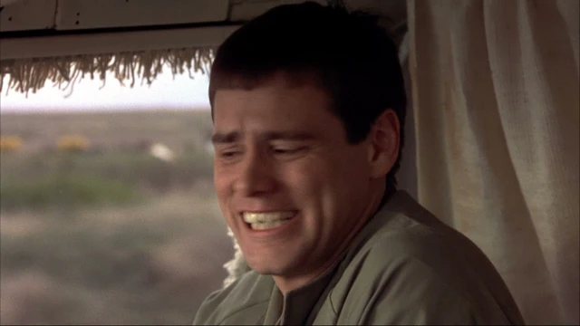
That was genius, Lloyd, sheer genius!
I mean, where did you come up with a scam like that?
Saw it in a movie once.
That was incredible!
So what happened? So the guy tricks some sucker into picking up his tab, then gets away with it scot-free?
No, in the movie, they catch up to him a half-mile down the road and slit his throat. It was a good one!
Wow. Harry?
What?
I know this isn't the best time, but when you get a chance to pull over...
I gotta pee.
What, are you crazy? I'm not pulling over now.
But I gotta go! What am I supposed to do?
Well, whiz in one of the empty beer bottles in the back.
They're on the floor. Just get one of...
Jeez, Lloyd!
Quit moving around!
Watch the seat! Watch the seat!
Okay! All right!
What? What's wrong?
The bottle's almost full and I'm still going.
So stop going.
I can't stop going once I've started. It stings.
Quick! Get me another bottle.
Come on. Hurry hurry hurry !
Okay okay, here here here. Hold it!
Hold that.
Jesus.
Hold that one. Hurry. I'm pinching it.
What are you, a camel?
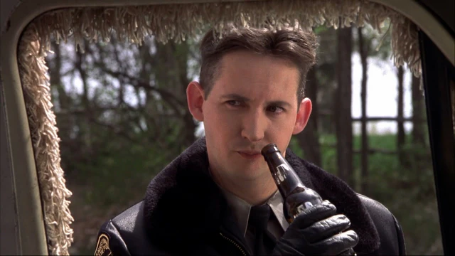
Pull over!
Huh?
Pull over!
No, it's a cardigan, but thanks for noticing.
Yeah. Killer boots, man!
Pull your vehicle to the side of the road!
License and registration, please.
You fellas were going a little fast back there, wouldn't you say?
You fellas been doing a bit of boozing, have you?
Sucking back on Grandpa's old cough medicine?
No. Oh no, sir.
Yeah, well, what's that?
That's nothing, sir.
Yeah well, you aware that it's against the law to have an open alcohol container here in the State of Pennsylvania?
Come on, give me that booze, you little pumpkin-pie-haircutted freak!
No, sir, don 't. Don 't drink...
You'd keep your mouth shut if you knew what was good for you, buddy.
Tic Tac, sir?
Get the hell outta here!
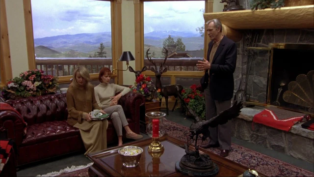
How could they not have gotten the ransom? It just doesn't make sense.
I left the money exactly where they instructed me to.
Oh, it makes perfect sense, Mary.
We should have called the authorities the minute we knew that Bobby was kidnapped.
Now, Helen, we've been through this already.
Mr. Andre.
Any word yet, sir?
No, nothing yet, Nicholas.
I've been giving this a lot of thought.
Maybe we should cancel the preservation benefit this weekend.
It would be so easy to reschedule it.
No, I don't think we should do anything out of the ordinary.
Yeah, she's right. It's imperative that we carry on as usual... Especially you, Mary.
What am l supposed to do, just go about my life like everything is fine?
That's exactly what you should do.
Yes, go skiing, go to parties, act normally, you know.
Yeah, don't you see, honey?
We can't let on that anything's wrong.
If the press or the authorities get wind of this, the kidnappers may panic.
I mean, you never know what they might do to him then.
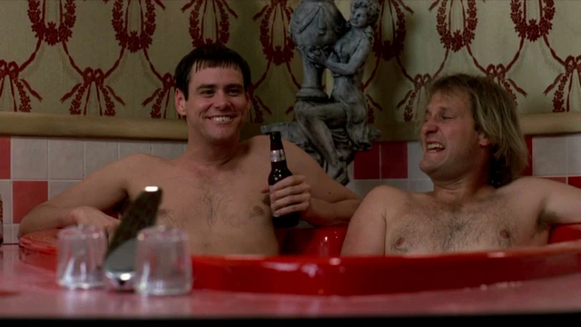
Whoa!
You want me to drive?
No, I'm cool.
Yeah! Get her!
This is the life: cold beer, a hot tub and paper-thin walls.
There's only one thing that could make this moment any better.
What's that?
If you had a nice set of knockers.
That's two things, Lloyd.
Yeah, well, it's a good thing you're not stacked, Harry, or I'd be banging you right now.
I'd show you what a real man can do.
Split you like an old piece of firewood.
You'd probably like it too, you big homo.
Shut up.
Don't tell me to shut up, woman.
I don't know, Lloyd. You know, this place doesn't really do it for me.
It brings back a lot of memories.
Pour quoi?
It was a few years ago.
What happened, Harry? Some little filly break your heart?
No, it was a girl. Fraida Felcher.
Yeah, we stayed in a place just like this.
Wasn't this classy, but, you know, nice.
Felcher? From Cranston?
Yeah. You know her?
Oh, yeah! I mean, I remember you... talking about her.
We had the most incredibly romantic time.
I thought we were gonna be together forever.
And then about a week later, right out of the blue, she sends me a John Deere letter.
She give you any reason?
Yeah, I called her up. She gave me a bunch of crap about me not listening to her enough or something.
I don't know. I wasn't really paying attention.
But the thing that hurt the most is I think she was seeing another guy.
Never did find out who.
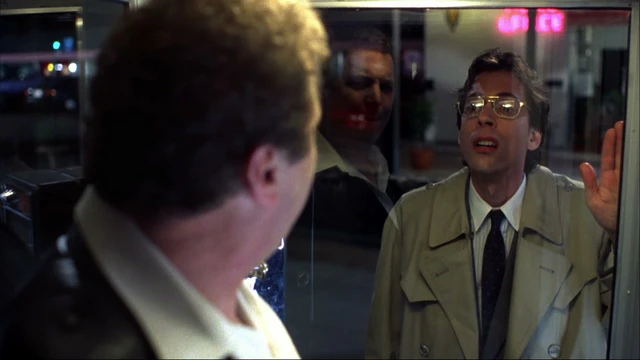
Mr. Andre, guess who we just happened upon?
I had plans. Things I wanted to do. This is where it all ends - at a phone booth.
The boys are holed up in a little love-nest for the night.
I think they're a little bit strange.
I think they're a little bit strange.
What the hell are these guys up to?
I mean, is it possible that they could be feds?
Highly unlikely from what I've seen.
Sir, did you ever hear of the concept of other people?
Um... me being that for the phone, sir.
Oh, you turned your back on me. Ho ho ho! He got me mad. I almost like it.
You and Shay were supposed to grab that bag so we could end this shit!
Here's your drink, baby.
Do you know the damage I could do to you?
Hold on a minute.
But that's not your problem. You didn't know.
Get off the phone. Get off the pho...
I'm sorry, Mr. Andre. You were saying?
Look, Mental, these jokers have got a lot of money and it belongs to me!
Now, I want to know who they are and what they're doing with it!
Hey hey hey, I told you already. I'm on it. All right?
Good.
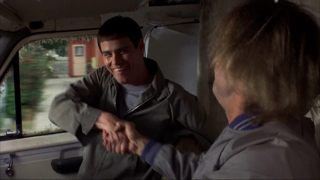
According to the map, we've only gone about four inches.
You know, I don't think we have enough gas money.
Relax. We have more than enough.
I think you're wrong, Lloyd.
How much you wanna bet?
I don't bet.
What do you mean, you don't bet?
I mean I don't bet. I don't gamble.
Pussy pussy pussy!
I never have, and I never will.
I'll bet you 20 bucks I can get you gambling before the end of the day.
No way.
I'll give you 3-to-1 odds.
Nope.
5-to-1? 10-to-1?
You're on.
I'm going to get you.
Huh-uh.
Oh, yeah.
I don't know how, but I'm going to get you.
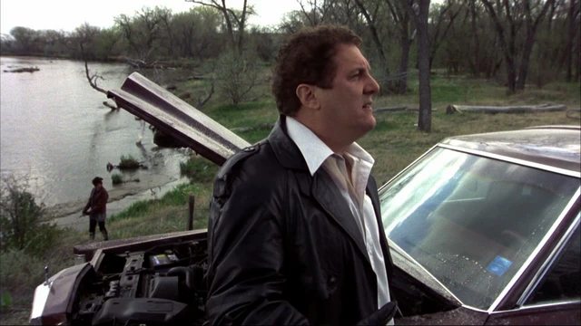
Come on, Joe. Let me do them. Let me do both of them.
You wouldn't even have to worry about it.
Just shut up! Now, we don't even know who the hell they are.
You don't kill people you don't know.
That's a rule.
Now, I want you to get up here,
Lie down on the front seat.
When they pick me up, you follow us. You got that?
Keep your shirt on. I gotta squeeze a lemon.
Hey, hey, hey. Here they come. Stay down, stay down!
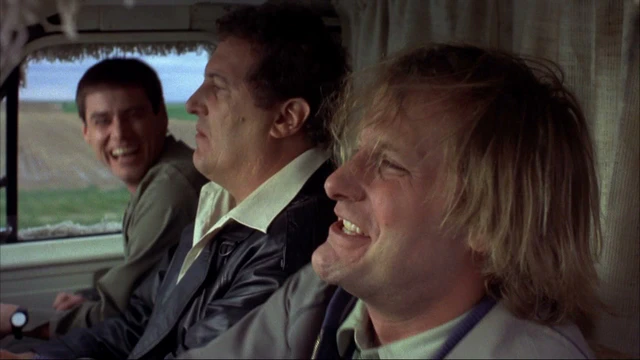
Say, uh, are you guys going to Davenport?
My car died, and I'm late for a luncheon.
We usually don't pick up hitchhikers, but I'm going to go with my instinct on this one.
Saddle up, partner.
You're it.
You're it! Quitsies!
Anti-quitsies.
You're it. Quitsies. No anti-quitsies.
No startsies.
You can't do that.
Can too.
Cannot. Stamped it.
Can too. Double-stamped it. No erasies.
Cannot. Triple-stamped it. No erasies.
You can't triple-stamp a double-stamp!
You can't triple-stamp a double-stamp, Lloyd!
Guys! Enough!
Hey, you wanna hear the most annoying sound in the world?
Guys! Guys! Guys!
Fellas, you think we could listen to the radio or something?
Radio? Who needs a radio? Ready, Harry?
Hey, Lloyd, look! There's some people who want a ride too.
Pick 'em up!
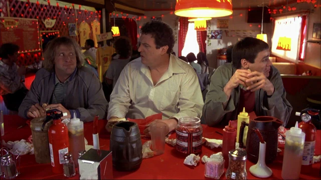
You want an atomicpepper, Mr. Mentaliano?
Nah, you guys go ahead.
I'll do it if you will, Lloyd.
Okay. You go first.
No, huh-uh, no, you go first.
I always go first!
Why don't you guys both stop acting like a couple of pussies and go at the same time, huh?
That sounds like a dare, Harry.
It's a double-dare.
Yeah, okay, you're on.
Huh. It's not so bad.
Yeah. It's more tingly than hot.
Yeah
Uh, if you fellas would excuse me, I've got to use the phone.
Enjoy your meal, guys.
Here, Lloyd, this helps.
Yeah, it's Mental. I'm just sitting down to a nice meal with our boys.
Well, how nice for you. Don't forget that your bread plate is on the left!
Look, I can't have these guys running around Aspen.
Don't worry. They ain't gonna be runnin' around nowhere after I dump a little rat poison in their Shirley Temple.
Okay, that's good. Here he comes.
Feeling better, girls?
Yes, much better. Thank you for asking.
So why are you going to Aspen? Vacation?
Why don't you eat up and we'll tell you?
It just doesn't seem like you packed much.
All I saw was one bag and that briefcase.
Well, no no, the briefcase isn't even ours.
Some lady left it at the airport.
We're just bringing it back to her.
How's your burger?
You mean, you don't even know her?
I mean, talk about being in the wrong place at the wrong time.
Are you okay, man? It was just a goof.
Oh, my ulcer! Quick! My pills!
Maybe somebody should call an ambulance?
Look, uh, you get the pills.
Don't worry. I know CPR.
I'll get the pills.
Out with the bad air, in with the good.
Get off! Don't don't! Back back!
This is a lot easier if you just lay back.
He's resisting me!
Here. Here we go, here we go.
Pills! There you go! There you go.
Pills are good! Take 'em down.
Pills are good! Drink 'em down.
There you go, big guy. That's better!
You want some ketchup and mustard? That helped us.
Son of a bitch!
Check, please.
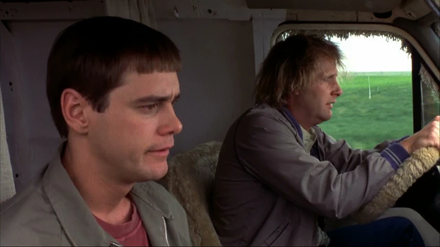
I can't believe it.
Life's a fragile thing, Harr. One minute you're chewing on a burger, the next minute you're dead meat.
But he blamed me. You heard him. Those were his last words.
Not if you count the gurgling sound.
You mean he was poisoned?
No doubt about it.
We found these next to the body.
Waitress says he came in with a couple of younger guys.
Now they're the ones who called the ambulance, and then they hit the road.
Get any idea where they were going?
We just received a report that they were seen headed west on l- towards Colorado.
Did you get a make on the vehicle?
Uh, yes, sir. They're driving an '84... sheepdog.
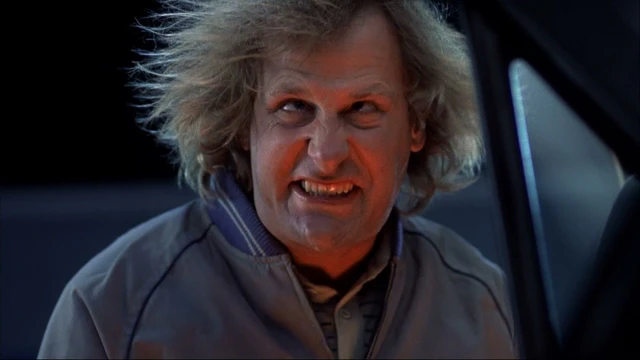
Skis, huh?
That's right.
Great. They yours?
Uh-huh.
Both of 'em? Cool.
Um, excuse me, but you're spraying everywhere.
Oh, man, you gotta be shitting me.
If it ain't my old friend! And right on time.
That's a lot of luggage for a little vacation.
I'm moving to Aspen.
I've got to get away from my boyfriend. He's such a klutz.
Plus, my astrologer told me that I really should stay away from accident-prone guys, so, you know.
Oh, well, you know.
Here. It's a little loose. You might want to...
Mm. Thank you.
Oh, no. Hey, no, allow me.
I've got a thing of... here. Got 'em right here. Right here.
Thank you.
Sure. You know, I'm heading up to Aspen myself.
Maybe we could, you know, meet up, have some hot chocolate or something.
Sure, why not? You seem harmless.
I'm going to give you my number.
Let me find a pen though.
Great!
Let's see.
I know I have one in here somewhere.
Look, why don't you just tell it to me? I got a really good memory.
Well, the number's 555... 905... wait a minute. That's my old number.
That is so weird how your mind just goes blank.
For God's sakes, just give me the damn number!
Okay, look, uh, you gonna get pushy, forget about it.
Find a happy place. Find a happy place.
I'll show you a happy place.
Here's your happy place.
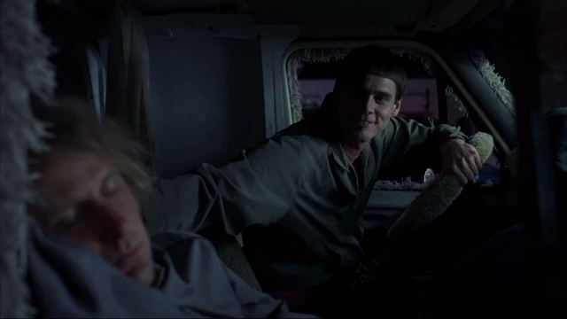
More flags over here!
All right, any sign of them yet?
No, sir, but we're expecting them shortly.
A motorist saw a pooch about 30 miles back headed this way.
Look, I told you what happened, okay? So just drop it.
Yeah, okay. Sure thing, Lloyd. Sure thing.
I promise not to mention another word about you being in a bathroom with a 6-4 trucker with his pants down.
Hey, look. We're almost in Colorado.
What do you say we change seats?
I've been driving for nine straight hours.
I don't have the energy to start a new state.
Why should I do you any favors?
I'll let you kiss me.
I swear... I'm gonna... I will take your...
I swear to God I'm gonna take your...
Aw, come on.
Don't touch me.
I'm done. Okay, enough.
Hey, guys. Whoa, Big Gulps, huh?
All right. Well, see you later.
Hey, Harry.
I got some beef jerk...
Some people just weren't cut out for life on the road.
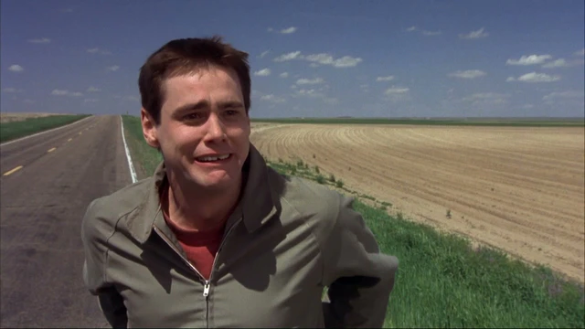
Hey! I was wondering when you were gonna get up.
Ha! Well, how long have I been out?
I'd say a good five hours.
Huh! I expected the Rocky Mountains to be a little rockier than this.
I was thinking the same thing. That John Denver's full of shit, man.
I'm only human, Harry! Anybody can make a mistake.
Come on, stop being a baby!
So we backtracked a tad!
A tad?! A tad, Lloyd?
You drove almost 1/6 of the way across the country in the wrong direction!
Now we don't have enough money to get to Aspen!
We don't have enough money to get home!
We don't have enough money to eat!
We don't have enough money to sleep!
Well, it's not gonna do us any good to sit here whining about it.
We're in a hole. We're just going to have to dig ourselves out.
Okay, all right. You're right. You're absolutely right.
Where're you going?
Home. I'm walking home.
Oh, well, pardon me, Mr. Perfect!
I guess I forgot that you never, ever make a mistake!
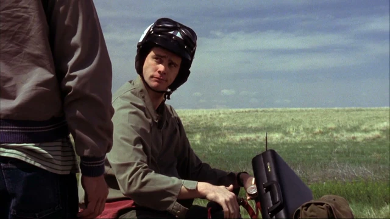
Harry! Harry! Wait up!
Got room for one more if you still want to go to Aspen.
Where did you find that?
Some kid back in town. Traded the van for it straight up.
I can get 70 miles to the gallon on this hog.
You know, Lloyd, just when I think you couldn't possibly be any dumber, you go and do something like this... and totally redeem yourself!
Still wanna go to Aspen?
Okay, let's go, buddy!
Lloyd, no! West! Go west, Lloyd!
I've got to stop to go to the bathroom.
Just go, man.
Oh! That sure is warm.
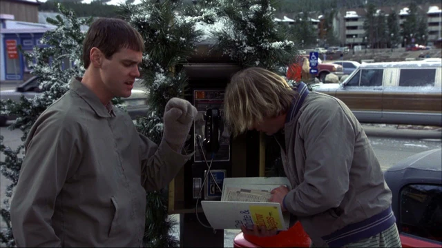
We're there.
Got a little nippy going through the pass back there.
Isn't this incredible?
What more could two single guys want?
How about some food?
I swallowed a big June bug when we were driving.
I'm not really hungry.
Well, I'm starving.
Jeez, look at the butt on that.
Yeah. He must work out.
Hey! Why don't we get busy and deliver the briefcase to Mary?
If I know her as well as I think I do she'll invite us right in for tea and strumpets.
Good plan. Where does she live?
I don't know.
What's her last name? I'll look it up.
You know, I don't really recall. Starts with an "S."
S-swim, Swamie, S-slippy, Slappy, Slimin, Solmon,Simin, Sal, Swenson, Swanson?
Maybe it's on the briefcase.
Oh, yeah! It's right here. Samsonite!
I was way off. I knew it started with an "S" though.
I'm not seeing it here, Lloyd.
She must be unlisted.
Great. So what are we supposed to do now?
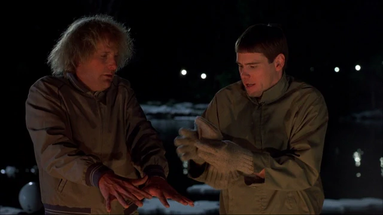
I can't feel my fi-fingers anymore. They're numb.
Ooh. Maybe you should wear these extra gloves.
My hands are starting to get sweaty.
Extra gloves? You've had this pair of extra gloves this whole time?
Yeah. We're in the Rockies.
I'm going to kill you.
What?
I'm gonna kill you, Lloyd!
Calm down!
Right now, I'm gonna kill you!
Harry, you got that crazy look in your eye!
I know what I'm going to do.
What are you doing?
Don't do anything foolish, Harry!
What? Foolish? This isn't foolish!
I'm going to toss this damn curse right into that damn pond!
I'm going to do it!
No, Harry! Your hands are freezing!
Harry, look! Look! Look!
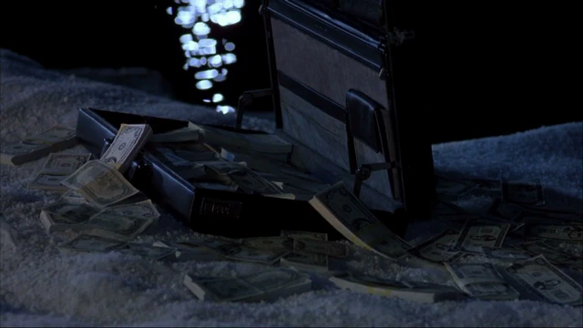
Okay, here's the plan: We borrow a few bucks, just a small loan from the briefcase.
And we find some reasonable lodgings.
And we'll keep track of all the money we spend with loans.
We'll be meticulous, right down to the last penny.
Whatever we borrow, we pay back.
Absolutely. We're good for it.
Our word is our bond.
This is the Hotel Danbury, Presidential Suite, gentlemen, normally reserved for royalty, visiting dignitaries, illustrious stars of stage and screen.
We have shortly coming the Emperor and Empress of Japan, and of course, Princess Charles and Di when they were together used to frequent the hotel constantly.
We'll take it!
There you go.
Thank you, sir.
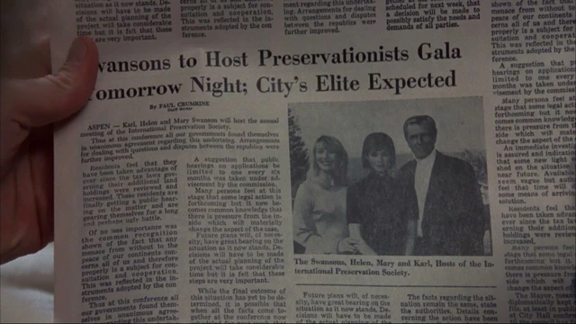
Wow! Boy, this is livin', huh? What's on next?
I don't know. Let me look it up.
Lloyd, you okay?
Harry, it's Mary!
It's who?
Mary with the briefcase.
Mary Swanson.
Wool hast anool...
"Annual meeting of... lnternational Preservation Society tomorrow night."
Yeah. It's a big one.
Well, come on, Cinderella.
We've got to get you ready for the ball!
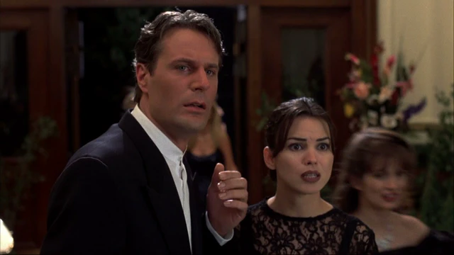
Thanks, Barn. There you go.
Excuse me. Gentlemen, this is a $500-a-plate dinner.
Good night.
Oh, 500 oh, okay. No problem. Here. Put us down for... put us down for four.
In case we want seconds.
Jesus Christ. It's them.
Them who?
Them, the guys who whacked Mental.
Can't you just feel it, Harry?
This is our big chance, man.
All we gotta do is show a little class, a little sophistication, and we're in like a dirty shirt.
That's no problem, Lloyd. We can be classy and sophistic...
Oh, look at the funbags on that hosehound.
I'd like to eat her liver with some fava beans and a nice bottle of Chianti.
Come on, let's go get a couple bowlsof loudmouth soup.
Hey, bartender, two martinis, please.
Yes, sir. Right away.
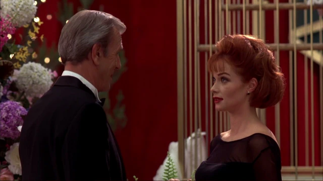
Ladies and gentlemen, can I have your attention, please?
The Aspen Preservation Society is the world's foremost defender of 23 endangered species.
And it is with tremendous honor that we're able to bring Mr. Swanson forward to introduce us to the 24th.
Ladies and gentlemen, I give you the lcelandic snow owl.
These magnificent specimens constitute one seventh of the snow owl population left on the planet.
And God willing,with your help and that of the Society's, these wonderful creatures will flourish once more.
Thank you again and enjoy your evening.
Can I have some pistachios, please? And another one of those.
Lloyd, what are you doing? Would you calm down?
I've never seen you so nervous.
Keep an eye on 'em, Shay. Keep a close eye.
I'm ready for a commitment, Harry.
The first time I set eyes on Mary Swanson, I just got that old-fashioned romantic feeling where I'd do anything to bone her.
That's a special feeling, Lloyd.
Yeah.
Oh my, there she is.
Wow! You weren't kidding, Lloyd. She's an angel!
Well, what are you waiting for? Get over there and talk to her.
She's just going to think I'm some kind of a psycho when she finds out how far I came just to see her!
You know what you have?! Her briefcase!
She's gonna be thrilled to see you.
Wait. I have an idea.
Why don't you go over and introduce yourself?
And that way, you can build me up so I won't have to brag about myself later.
Tell her I'm rich and, uh, I'm good-looking and, uh, I have a rapist wit.
No, I don't know. I don't think I could... No.
Come on, please.
Okay okay okay. Stop.
What are you gonna do?
I'm going to hang by the bar, put out the vibe.
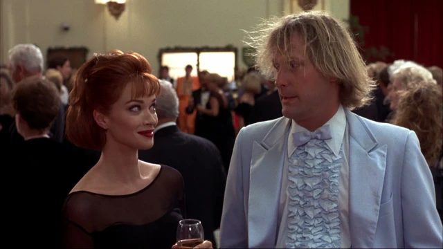
Nice set of hooters you got there.
I beg your pardon?
The owls, they're beautiful.
Oh. Yeah. Are you a bird lover?
Me? Oh, no. Well, I used to have a parakeet.
But now my main area of expertise is, uh, canines. "Dogs" to the layperson.
I love dogs too. So how are you involved with them?
Oh, you know, I've trained them, bathed them, clipped them.
I've even bred them.
Oh, really? Any unusual breeding?
No. Mostly just doggy-style.
One time, we successfully mated a bulldog with a shih-tzu.
Really? That's weird.
Yeah. We, we called it a bullshit.
Oh, I'm... Anyway, the real reason I came over here was to...
I've got to introduce you to a buddy of mine.
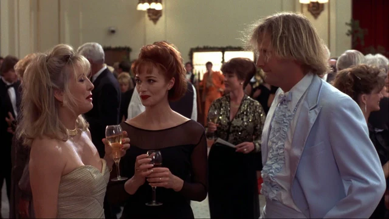
I don't believe I've met your friend.
Well, actually, we haven't been properly introduced.
My name is Mary Swanson.
Hi, Harry Dunne.
Hi. Nice to meet you. This is my stepmother Helen.
Hi. Harry Dunne. Pleasure to meet you both.
Mm-hmm. Well, I saw you come in. I was hoping I'd get a chance to meet you.
You were? Really?
Yes! That tuxedo, it's fabulous!
Really. I love a man with a sense of humor, and so does Mary. It's hysterical!
Really? Oh. Anyway, um, about my friend...
What are you doing tomorrow?
I believe that Mary is looking for someone to hit the slopes with.
She... what? Huh?
Helen, you're embarrassing me.
Well, you are.
I mean, after all, the snow's going to be gone in a couple of weeks.
And, well, this may be your last chance.
Poor thing, she never gets a chance to get out.
Well, what do you say, Mr. Dunne? Are you available?
Well, I don't know. See, my friend...
Oh, forget your friend for one day.
I think you kids'll have a wonderful time. What do you say?
Well, you know, I don't know, you know. You know, the thing... part of... sure. What time?
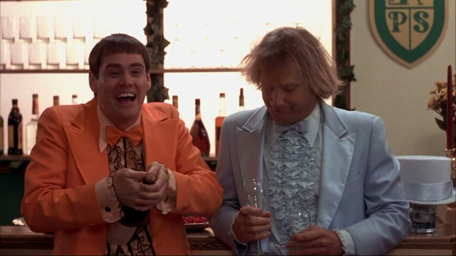
How come you didn't bring her over?
Relax. You're golden.
I got you a date with her tomorrow.
I love you, man.
Okay okay. You're kissing me.
This calls for a little of the bubbly!
You're going to be my best man, Harr. I promise.
You have just earned yourself a seat at the head table, pal. And we already got the tuxes.
Boy, this party really died.
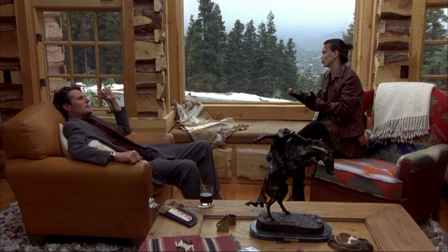
Hey, maybe it was a coincidence.
It was a message, Shay, pure and simple.
I mean, we killed their bird. Now they killed one of ours.
How could anybody whack a bird with a cork?
These guys aren't just anybody. They're good.
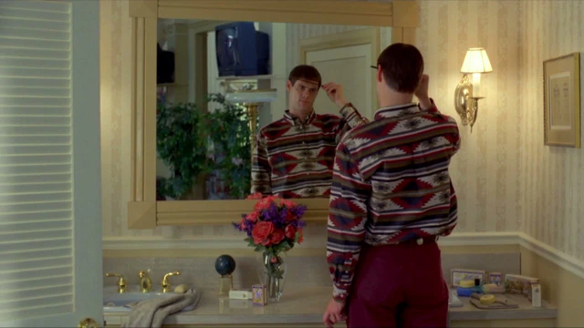
Mrs. Mary Christmas. Kinda catchy, huh, Harr?
Yeah yeah, that sounds nice.
But, Lloyd, don't you think you might be jumping the gun a little bit?
I mean, you know, who knows? Maybe, once you get to know her you'll find out that she's not your type.
Hey! Don't you ever say that again!
She is the love of my life! The blood in my veins!
We belong together... Till the mountains fall into the sea, till the heavens collide!
Or until I get sick of her and need to move on. You hear me?
Okay okay okay okay. Just calm down.
Now... Let me get this straight. Lobby bar in the lobby?
Yeah, and that's what she said. She'll meet you there at 10:00 sharp.
Okay. Where're you going in that get-up?
You know, I just thought, when you'd be off making your love connection I'd be out trying my luck on the slopes.
You mean you're gonna go out in public dressed in tights?
Oh no, these aren't tights, Lloyd.
These are fashionable Euro-trash ski trousers.
Pretty revealing.
Really?
Yeah, but it's just a tiny lump. No one'll notice.
You're right. I can't go out dressed like this.
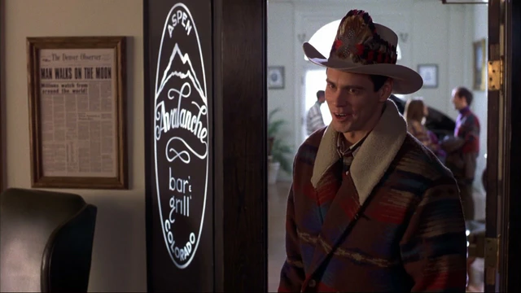
Beautiful outfit, sir.
There you go.
Hey. How you doin'?
You're a little early. We don't open for about 45 minutes.
I'm meeting someone here. Mind if I wait at the bar?
No. Come on in.
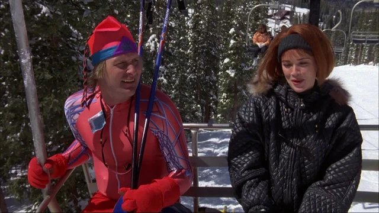
It's a beautiful day, huh, Harry?
Yes yes, I've had a wonderful time so far. Thank you.
God, it feels so good to get up here.
I haven't been outside that much in the last couple weeks.
Oh, yeah? Why not?
Um, there's been some family problems.
But I don't want to bore you with those.
Thanks. Oh, look. Frost.
Harry? Are you okay?
Oh, yeah, I do this all the time.
Let's go to the top this time.
Hi, there.
Say, kids, you wouldn't happen to have a cup of warm water, would you?
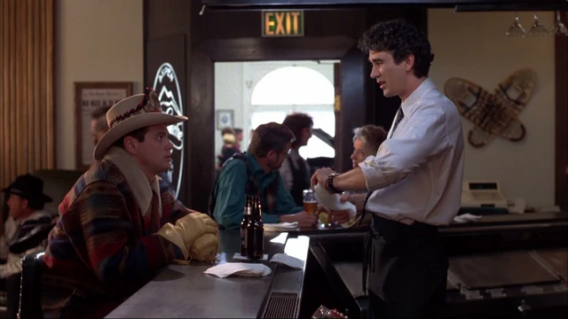
Excuse me. Is it 10:00 A.M. yet?
It's 1:00.
That's what I have too. Thought maybe it was fast.
She's running late, huh?
Just a couple hours. You know girls.
When they're excited about something, everything has to be perfect.
This one's on me.
Yippee.
Chablis, please. Hello.
Bad day, huh? Me too.
'Course everything's been bad since I broke up with my boyfriend.
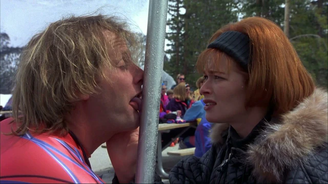
My God! You poor guy. Does it hurt?
I'm fine. I saved a seat for you.
Oh no, listen. This is silly. Let me help you.
Yes. It'll only hurt for a moment, like a Band-Aid.
Come on, ready?
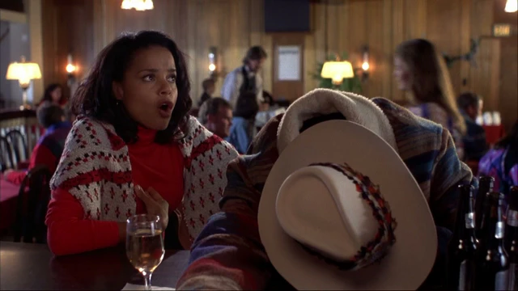
I said to myself, "Run, Beth. Run for your life before this man kills you both."
Then do you know what the klutz did?
No, and I don't care!
I'm going to tell you. He came home one night dead drunk and decided he wanted to fix the sink.
Couldn't believe him.
Anyway, enough about me. Let's talk about you.
How come you're here?
Bartender! You wouldn't happen to know a Mary Swanson, would you?
Mary Swanson? Yeah. She comes in here all the time.
What's that supposed to mean?
She has dinner.
Oh. I'm sorry. Uh... you know where she lives?
Yeah, her family has the big place up on Alpine Drive.
Alpine Drive? Big place?
No way!
That's great!
We landed on the moon!
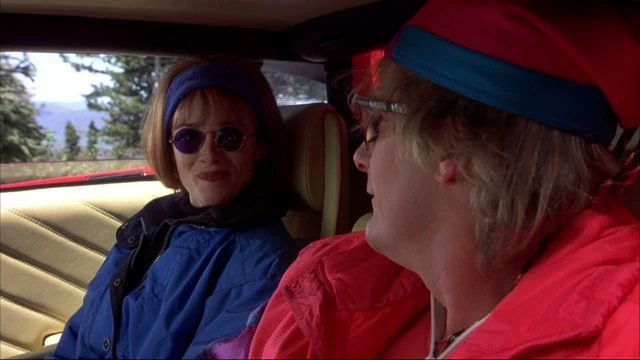
I've gotta tell you, today was just what I needed. Thanks a lot, Harry.
It was my pleasure, Mary.
So you'll pick me up tonight at 7:45?
Well, no, I've got a few things to take care of first.
Why don't we make it quarter to 8:00?
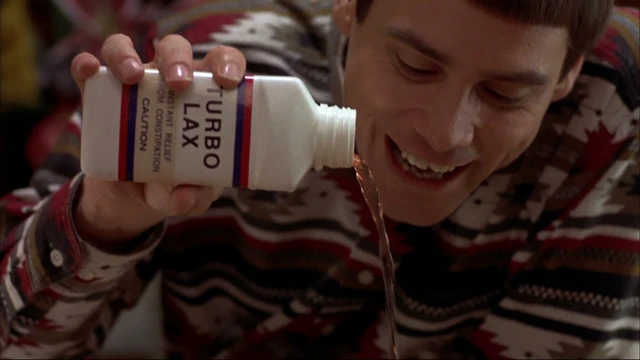
Doesn't make any sense, Lloyd.
She told me 10:00 sharp!
Are you sure you went to the right bar?
Oh, yeah. Yep. I'm pretty sure.
Lobby bar. Right in the lobby.
Ahh... well... Maybe she just had a change of heart.
Oh, that pisses me off! That pisses me right off!
I hate when women do that, you know?
She wanted to see you again!
She told me that! And now no?
Wait a minute! She must have meant 10:00 at night.
Do you think?
Why would she have you meet her at a bar at 10:00 in the morning?
I just figured she was a raging alcoholic.
And all this time, I've been going through such pain and personal anguish.
Such hell! For nothing!
Oh, God. That's funny. Oh, that's good stuff. Oh, boy.
Well, listen, looks like you got your night planned, so I'm just going to head out and catch a flick.
Hey, Harry, old buddy, old pal!
Will you join me in a good-luck toast before you head out?
Oh, sure thing. Whatever you think will help your chances.
Yes, sirree. You know why I like you, Harry?
Because you're a regular guy.
Yep, that's why I want you to stay regular.
1/2 teaspoon for fast, effective relief.
To my friend Harry... the matchmaker.
Oh, get out of here.
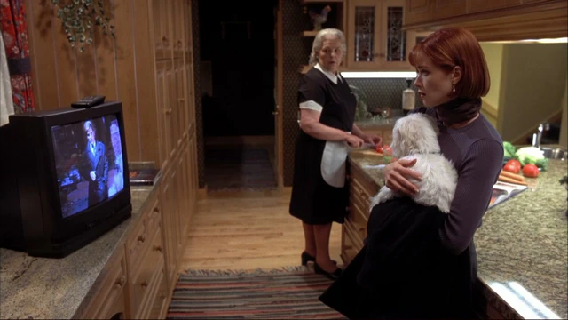
Hi, the door's open. Come on upstairs.
Hi, make yourself at home, okay?
I'm almost ready. One minute?
Okay, sounds good.
Harry, are you in there?
Be right out!
I hope you're not using the toilet. It's broken.
The toilet doesn't flush.
No, I was just shaving.
Shaving?
Yeah, I was running a little late.
I thought this would save some time.
Okay well, I'll be in the kitchen whenever you're ready.
Oh, Jeez!
Tomorrow on "A Current Affair," inside the home of the Menendez brothers' attorney.
And next, we'll be back in a minute with the heartbreaking story of the blind Rhode lsland boy who was duped into buying a dead parakeet.
I just thought he was real quiet.
Who are these sick people?
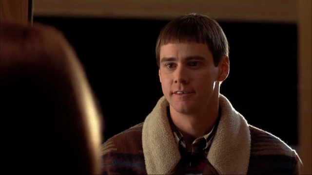
Hi. Remember me?
Uh... not really.
Providence. I drove you to the airport last week.
Oh my God! Uh... Lloyd, right?
You remembered my name.
What are you doing in Aspen?
I brought you your briefcase.
You left it at the airport, you big goof!
You have my briefcase?
Yeah. Hey, I have it at my hotel room.
You want to jump on the bike with me?
We can go get it unless... unless you're busy.
No no!
I don't wanna...
You just wait right here.
Okay.
Come on, flush, you bastard!
Harry, what are you doing in there?
I'm just... I'm cleaning my teeth! I'm gargling.
Just give me a minute, Mary. I'll be right with you.
Harry, I'm sorry, but something important's come up, and I've got to run out.
It's-it's sort of an emergency. I'll explain later.
But, Mary...
I'm sorry. I've really got to go.
I promise we'll do this again sometime.
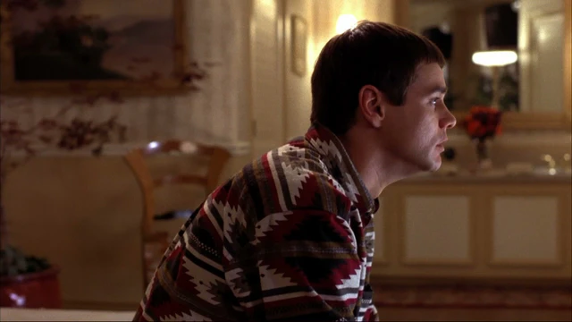
Race you to the top.
Come here.
Yeah! Ha ha! I won!
Look familiar?
I don't believe it. You really have it.
Of course, I have it.
When Lloyd Christmas drives a woman to the airport, he makes sure she gets all her luggage.
That's my whole philosophy.
This is incredible.
You mean to say you drove 2,000 miles just for me?
Uh... I didn't really have a lot to do.
And I know how frustrating it can be to lose a bag.
That is so sweet, Lloyd.
Look, Mary, I know this may seem a little sudden, but I've given it a lot of thought.
You're the woman I've been waiting for my whole life, and I'm not ashamed to admit it.
Please... Let me finish.
I'm crazy about you.
I've never felt this way about anybody.
Listen to me. I feel like a schoolboy again.
A schoolboy who desperately wants to make sweet sweet love to you.
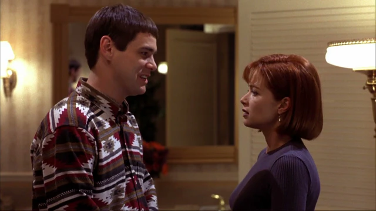
Oh, I thought I heard you talking to someone.
Mary, I desperately want to make love to a schoolboy.
Maybe I should be going.
No, that's not what I meant. What l meant was, um...
God. I like you, Mary. I like you a lot.
I want to ask you a question straight out, flat out, and I want you to give me an honest answer.
What do you think the chances are of a guy like you and a girl like me... ending up together?
Well, Lloyd, that's difficult to say. We really don't...
Hit me with it! Just give it to me straight!
I came a long way just to see you, Mary.
Just... The least you can do is level with me.
What are my chances?
Not good.
You mean not good, like one out of 100?
I'd say more like one out of a million.
So you're telling me there's a chance! Yeah!
I read you.
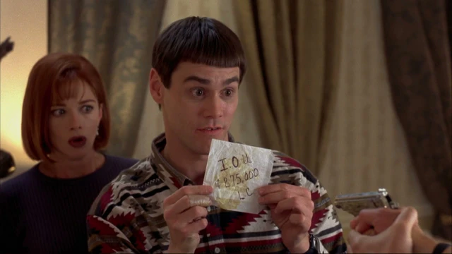
Hi. We have plenty of towels. Thanks.
Nicholas! What are you doing here?
I've been looking for you, Mary.
I have some news about your husband.
Husband?! Wait a minute!
What was all that one-in-a-million talk?
Aren't you going to invite me in?
Hey, Harry, you never called!
What are you doing here?
Excuse me, gunman, who are you?
Don't play dumb with me, asshole!
I'm the rightful owner of that briefcase you've been carrying around!
Oh. Well, then...
Nicholas, my family trusted you.
Shut up!
Listen, Mr. Samsonite, about the briefcase...
My friend Harry and l have every intention of fully reimbursing you.
What? You open it up. Open it up!
Go ahead, open it up. Do what he says.
Hurry!
What is this? Where's all the money?
That's as good as money, sir.
Those are IOUs. Go ahead and add it up. (I owe you)
Every cent's accounted for.
Look. See this?
That's a car. 275 thou.
Might want to hang on to that one.
You're a dead man!
Lloyd, I'm home!
Look, we've got to have a serious talk.
I got a confession to make.
Oh, good. You found her. I'll leave you two alone.
No. Stay.
Yes, I'd like a one-way ticket to Amsterdam departing as soon as possible, please.
How do you guys know each other?
We used to be best friends.
Yeah, until he turned into a backstabber.
Me a backstabber? You got a lot of nerve.
You knew I was crazy about her!
And you knew I was crazy about Fraida Felcher, and that didn't stop you, did it?
What do you mean?
What do you mean? Don't deny it, Lloyd.
Fraida told me the whole sleazy story, Mr. French Tickler.
Okay, what time does it... What time does that leave?
Wait a second. Can I have a vegetarian meal?
I guess we both learned a little something about each other today, did n't we?
Yeah, you said it, pal.
Maybe we're not as good of friends as we thought we were.
I guess not. I mean, if one beautiful girl can rip us apart like this, then maybe our friendship isn't worth a damn.
Maybe we should call it quits right now.
You just tell me where to sign, bud.
Right on my ass after you kiss it!
Kiss it?! You kiss mine!
Both cheeks, both lips, right here!
Shut up! Now, which one of you losers wants to get it first?
Over here... I was the one that got you into this whole mess.
Come on and shoot me.
No! Wait! Wait. No no, do me first.
I stole your girl, Lloyd. I deserve it.
No, you don't.
Yes, I do.
No, you don't.
Yesterday was one of the greatest days of my life.
Mary and I went skiing, we made a snowman, she touched my leg.
Okay, kill him!
You killed my best friend, you bastard!
If it's any consolation, you're about to be reunited.
Harry! You're alive!
And you're a horrible shot.
Lucky me.
Police! Open up! Nobody move!
Everybody freeze! Get those hands up!
Not you, dummy!
Get the gun. Special OfficerBeth Jordan, FBI.
Hey! Who? But... Huh?
Mr. Dunne, thank you very much.
We couldn't have done it without you.
We've been following you guys all the way from Providence.
What's going on, Harry? Your name is Harry, isn't it?
Yeah, she grabbed me down the lobby, explained what was up.
Then they slapped this bulletproof vest on me and gave me a gun.
But what if he shot you in the face?
What if he shot me in the face?
That's a risk we were willing to take.
How come I didn't get a gun?
Did you get a gun?
Honey!
Easy easy.
You're okay.
Okay, I'm just a little sore.
Oh, baby, I missed your loving.
Honey, there's someone I want to introduce you to.
He's the kindest, gentlest man I've ever met.
Will you meet him?
Sure.
He's got a gun!
Lloyd? Lloyd! I said this is my husband Bobby.
Oh. Hi, Bobby. I'm so happy for you.
Thank you. Thank you both very much.
I owe you both a debt of gratitude.
Thank you.
I can't believe this, Lloyd.
First Mary dumps us, then the cops take our nest egg.
Then our hog breaks down.
Yeah!
When are we ever gonna catch a break?
Hi, guys! We're going on a national bikini tour, and we're looking for two oil boys who can grease us up before each competition.
You are in luck!
There's a town about three miles that way.
I'm sure you'll find a couple guys there.
Okay. Thanks.
Do you realize what you've done?
You'll have to excuse my friend. He's a little slow.
The town is back that way.
Wow. Two lucky guys are gonna be driving around with those girls for the next couple of months.
Yeah, don't worry. We'll catch our break too.
Just gotta keep our eyes open.
Yeah.
You're it.
You're it. Quitsies.
You're it. Anti-quitsies, double-stamp.
You're it. Anti-quitsies, triple-stamp.
No erasies, none at all. You can't triple-stamp.
Yes, if you have a double-stamp, of course you can.